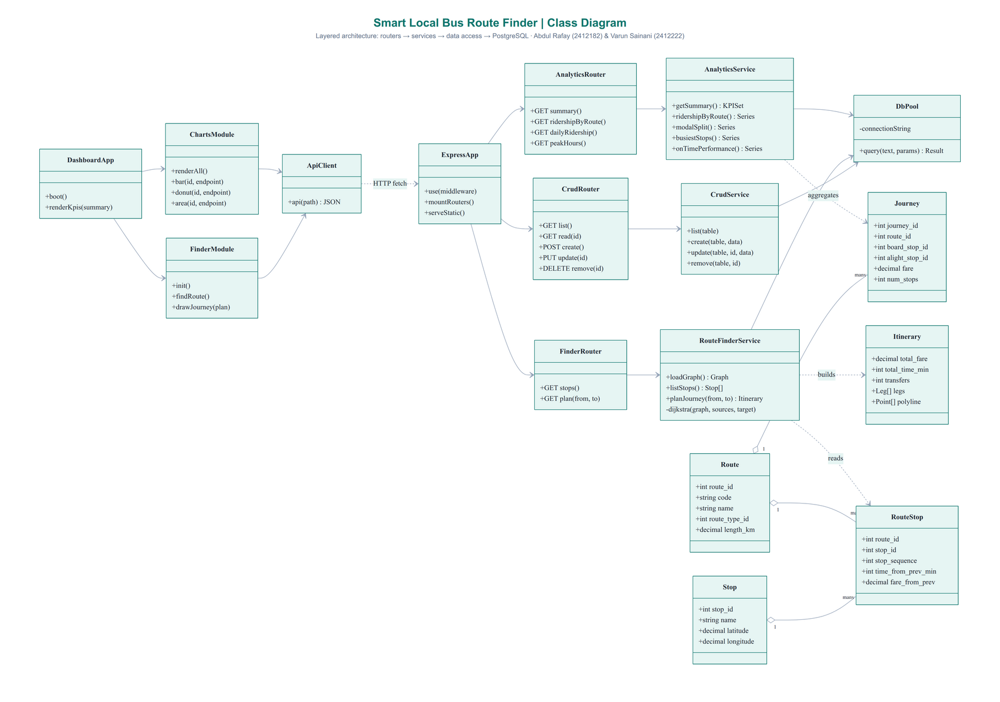
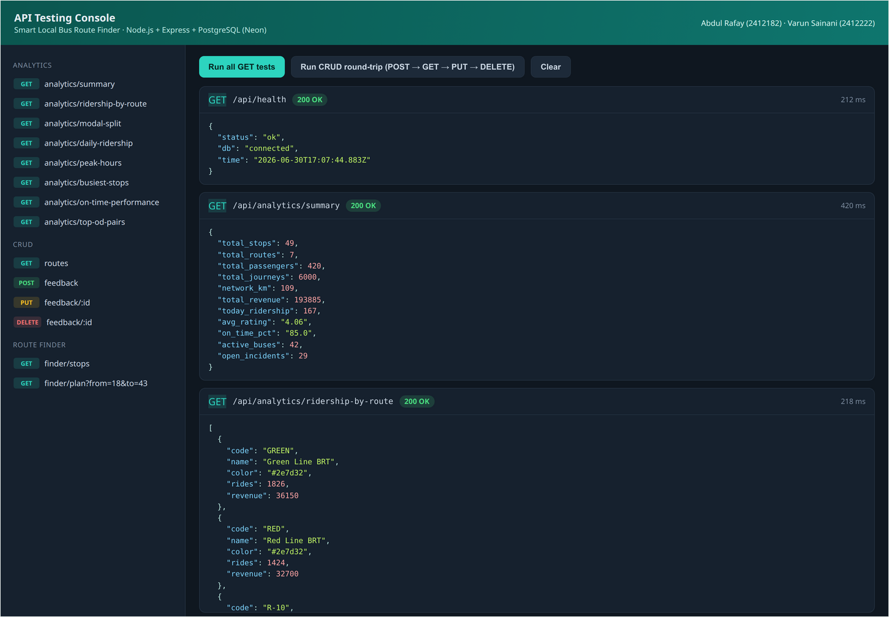
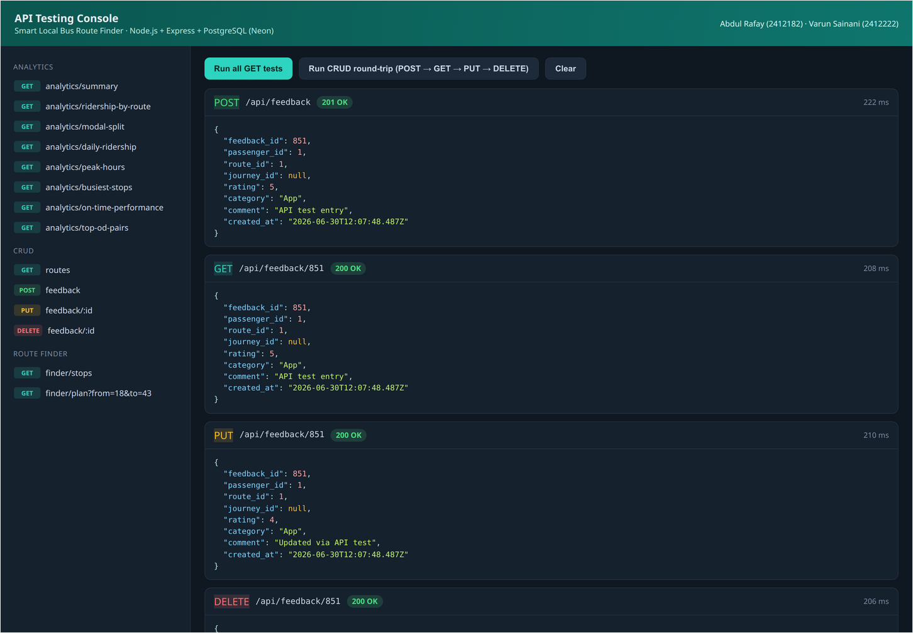
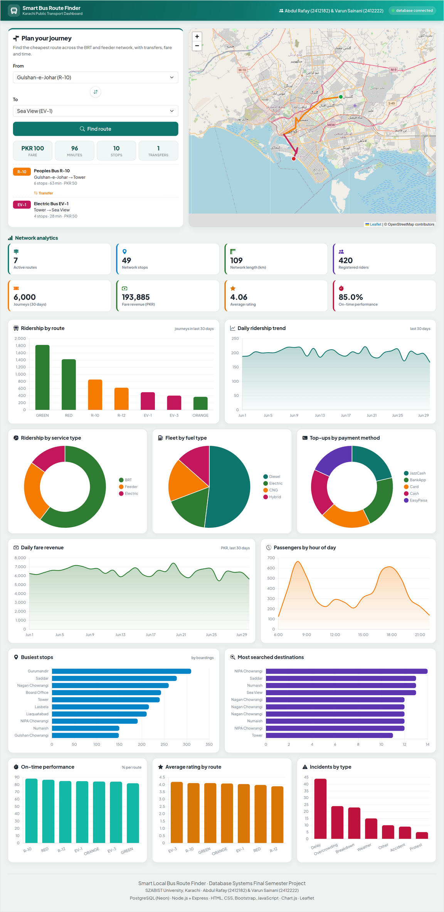

A Database-Driven Analytical Dashboard for Karachi's Public Bus Network
Abdul Rafay (2412182)
Varun Sainani (2412222)
Final Semester Project · Database Systems
BS Computer Science · SZABIST University, Karachi
June 2026
Acknowledgement
We would like to express our sincere gratitude to our course instructor for the guidance, feedback, and encouragement provided throughout the development of this project. The structured guidelines for the Database Systems final project gave us a clear path from problem identification, through database design, to the implementation of a working analytical dashboard.
We are also thankful to SZABIST University, Karachi, for providing the academic environment and resources that made this work possible. Finally, we thank our families and peers for their continuous support during the project timeline.
This project was completed as a group effort by Abdul Rafay (2412182) and Varun Sainani (2412222). Both members contributed to the database design, backend development, frontend dashboard, testing, and documentation.
Table of Contents
Section
Title
1
Title Page
2
Acknowledgement
3
Table of Contents
4
List of Tables
5
List of Figures
6
Introduction
7
Problem Statement
8
Proposed Solution
9
Entity Relationship Diagram (ERD)
10
Class Diagram
11
Software Specifications
12
Database Design and Implementation
13
API Development (Endpoints, Methods, Testing Results)
14
Screenshots of API Methods
15
JavaScript Code Showing API Calls
16
Dashboard Design and Implementation
17
Final Output Screenshots
18
Conclusion
19
References
List of Tables
The database contains 21 tables, grouped into three functional areas.
No.
Table
Purpose
1
zone
Geographic and fare zones of Karachi
2
operator
Bus operators running services in the city
3
route_type
Service category (BRT, Feeder, Electric, Intercity)
Route Finder - journey plan with transfer on the map
Figure 8
Responsive (mobile) view of the dashboard
6. Introduction
Public transportation in Karachi is used by millions of commuters every day. In recent years the city has introduced a structured Bus Rapid Transit (BRT) network, including the Green Line and Red Line corridors, along with the Peoples Bus Service feeder routes and a fleet of electric buses. Despite this progress, there is no single digital system that helps a passenger decide which bus to take, where to change buses, how much the journey will cost, and how long it will take.
The Smart Local Bus Route Finder is a database-driven analytical dashboard and route planning system built for this scenario. It is composed of a PostgreSQL database hosted on Neon, a REST API built with Node.js and Express, and an analytical dashboard built with HTML, CSS, Bootstrap, and JavaScript. The dashboard presents meaningful insights generated from the database, such as ridership, revenue, on-time performance, and popular destinations, while an integrated route finder computes the cheapest journey across the bus network using a shortest-path algorithm.
This report documents the complete project: the problem it addresses, the proposed solution, the database design, the API, and the analytical dashboard, along with testing results and output screenshots. The project satisfies the Database Systems final project requirements, including a relational schema of more than sixteen tables and a working analytical dashboard.
7. Problem Statement
Existing Challenges
New passengers and even regular commuters in Karachi face several recurring difficulties when using public transport:
Lack of awareness of which bus route serves a given origin and destination pair.
Uncertainty about where to switch buses (transfer points) when no single route covers the journey.
No reliable way to estimate the fare in advance, leading to confusion or overpayment.
No reliable way to estimate travel time, making it hard to plan around work, classes, or appointments.
Route information is scattered across informal sources rather than centralised in one accessible system.
Current Limitations
Transport authorities also lack a consolidated analytical view of their own network. Ridership, revenue, fleet utilisation, on-time performance, and passenger feedback are either not recorded digitally or are kept in disconnected systems. Without a central database, it is difficult to answer simple management questions such as which route is busiest, which stops have the highest boardings, what the daily revenue trend is, or how reliable each service is.
Need for Automation
A centralised, database-driven system is needed to (a) store the network, fleet, and operational data in a consistent relational structure, (b) expose this data through a REST API, and (c) present it through an analytical dashboard and a route planner. Automation removes the dependence on word of mouth for passengers and gives operators data-backed insight into their network.
Expected Benefits
Passengers receive a clear route recommendation with fare, time, number of stops, and transfers.
Operators gain a single dashboard summarising ridership, revenue, reliability, and satisfaction.
The relational design enforces data integrity through primary keys, foreign keys, and constraints.
The architecture is extensible to a larger network and to live data sources in future work.
8. Proposed Solution
The proposed solution is a three-tier web application following a clean separation between data, logic, and presentation.
Layer
Technology
Responsibility
Database
PostgreSQL on Neon
Stores the network, fleet, and operational data across 21 related tables with full constraints
Backend / API
Node.js + Express
REST API for CRUD operations, analytical queries, and the route finding engine; returns JSON
Frontend
HTML, CSS, Bootstrap, JavaScript
Single-page analytical dashboard that consumes the API via fetch and renders charts
Charting
Chart.js
Bar, line, area, pie, and doughnut charts on one dashboard page
Mapping
Leaflet + OpenStreetMap
Visual rendering of the planned journey on a city map
Key Features
Graph-based journey planning with automatic transfer detection using Dijkstra's shortest path algorithm.
Fare and travel time estimation per journey using a documented fare-stage structure.
An analytical dashboard with key performance indicators and multiple chart types on a single page.
A complete REST API supporting create, read, update, and delete operations plus analytical endpoints.
A responsive, mobile-friendly interface.
Data Coverage
The routable network covers Karachi's BRT lines (Green Line, Red Line, Orange Line), the Peoples Bus Service feeder routes (R-10, R-12), and electric bus routes (EV-1, EV-3). These routes share interchange stops such as Numaish, Tower, Gurumandir, NIPA Chowrangi, and Nagan Chowrangi, which allows the route finder to plan multi-route journeys with transfers.
9. Entity Relationship Diagram (ERD)
The ERD below models the complete database. It contains 21 entities with primary keys, foreign keys, relationships, and the cardinality between them. Reference entities (zone, operator, route_type) feed the network entities (route, stop, route_stop, fare_stage), which in turn connect to the fleet and operations entities (bus, driver, schedule, trip_log) and the passenger and revenue entities (passenger, fare_card, journey, feedback).
Figure 1: Entity Relationship Diagram of the Smart Local Bus Route Finder database (21 entities).
10. Class Diagram
The class diagram shows the layered software architecture. Incoming HTTP requests reach the Express application, which routes them to the analytics, route finder, and CRUD routers. Each router delegates to a service class, and every service uses a shared database pool. The route finder service builds an itinerary from the route and stop domain models. On the client side, the dashboard application coordinates the charts and finder modules through a single API client.

Figure 2: Class diagram showing routers, services, data access, domain models, and the frontend modules.
11. Software Specifications
Hardware Requirements
Component
Minimum Requirement
Processor
Dual core 2.0 GHz or higher
Memory (RAM)
4 GB (8 GB recommended for development)
Storage
500 MB free disk space
Network
Internet connection (the database is cloud hosted on Neon)
Client device
Any modern desktop or mobile device with a web browser
Software Requirements
Component
Requirement
Operating System
Windows, Linux, or macOS
Runtime
Node.js 18 or later
Database
PostgreSQL 16 (hosted on Neon)
Web browser
Google Chrome, Firefox, or Edge (latest)
Development Tools
Tool
Use
Visual Studio Code
Code editor
Node.js + npm
Backend runtime and package management
Express.js
REST API framework
node-postgres (pg)
PostgreSQL driver and connection pooling
Neon
Serverless PostgreSQL hosting
Bootstrap 5
Responsive UI framework
Chart.js 4
Charts and graphs
Leaflet
Interactive maps with OpenStreetMap tiles
Git and GitHub
Version control
Vercel
Deployment of the API and dashboard
12. Database Design and Implementation
The database was designed by first identifying the entities and relationships, then converting the ERD into a normalised relational schema in PostgreSQL. Every table has a primary key, foreign keys enforce referential integrity, and check constraints validate domain values (for example, ratings between 1 and 5, valid statuses, and non-negative fares). Indexes were added on the columns used by the route finder and the analytical queries.
Constraints Used
Primary keys on every table (serial identity columns).
Foreign keys with appropriate ON DELETE behaviour (cascade, set null, or restrict).
Unique constraints (for example route code, bus registration number, card number, and the route_stop sequence).
Check constraints on enumerated values, coordinate ranges, ratings, and monetary amounts.
Sample Data Volume
The database was seeded with realistic data covering the BRT and feeder network plus operational records for a thirty day window. The seed data is deterministic and reproducible.
Table
Rows
Table
Rows
Table
Rows
zone
7
bus_model
6
fare_card
365
operator
4
bus
52
card_transaction
6,320
route_type
4
driver
55
journey
6,000
route
7
staff
35
route_search
3,148
stop
49
schedule
126
feedback
850
route_stop
61
trip_log
3,780
incident
130
fare_stage
9
maintenance
160
passenger
420
Total: more than 22,000 rows across 21 tables.
Example DDL (route_stop, the graph edge table)
CREATE TABLE route_stop (
route_stop_id SERIAL PRIMARY KEY,
route_id INT NOT NULL REFERENCES route(route_id) ON DELETE CASCADE,
stop_id INT NOT NULL REFERENCES stop(stop_id),
stop_sequence INT NOT NULLCHECK (stop_sequence >= 1),
distance_from_prev_km NUMERIC(6,2) NOT NULL DEFAULT 0,
time_from_prev_min INT NOT NULL DEFAULT 0,
fare_from_prev NUMERIC(6,2) NOT NULL DEFAULT 0,
UNIQUE (route_id, stop_sequence),
UNIQUE (route_id, stop_id)
);
13. API Development
The REST API is built with Node.js and Express and connects to PostgreSQL through a pooled connection. It exposes three groups of endpoints: CRUD endpoints for the core entities, analytical endpoints that run aggregate queries, and the route finder endpoints. All responses are JSON.
API Endpoints and Methods
Method
Endpoint
Description
GET
/api/health
Service and database health check
GET
/api/analytics/summary
Key performance indicators for the dashboard
GET
/api/analytics/ridership-by-route
Journeys and revenue per route
GET
/api/analytics/modal-split
Ridership share by service type
GET
/api/analytics/daily-ridership
Daily ridership over the last 30 days
GET
/api/analytics/daily-revenue
Daily fare revenue over the last 30 days
GET
/api/analytics/peak-hours
Passenger distribution by hour of day
GET
/api/analytics/busiest-stops
Top stops by boardings
GET
/api/analytics/fleet-fuel-mix
Fleet composition by fuel type
GET
/api/analytics/payment-methods
Top ups by payment method
GET
/api/analytics/on-time-performance
On-time percentage per route
GET
/api/analytics/rating-by-route
Average passenger rating per route
GET
/api/analytics/top-od-pairs
Most searched destinations
GET
/api/analytics/incidents-by-type
Incidents grouped by type
GET
/api/finder/stops
All stops for the search pickers
GET
/api/finder/plan?from=&to=
Plan a journey (Dijkstra) with legs, fare, and time
GET
/api/{resource}
List a resource (routes, stops, passengers, drivers, etc.)
GET
/api/{resource}/:id
Read a single record
POST
/api/{resource}
Create a record
PUT
/api/{resource}/:id
Update a record
DELETE
/api/{resource}/:id
Delete a record
CRUD endpoints are provided for eight resources: routes, stops, passengers, drivers, operators, buses, feedback, and incidents.
The Route Finder Engine
The route finder loads the network as a graph where each node is a (route, stop) state. Riding moves along consecutive stops of a route, and a transfer switches routes at a shared stop with a time penalty. Dijkstra's algorithm finds the lowest total travel time, after which the fare for each leg is computed from the fare-stage table. The result is a step-by-step itinerary with the total fare, time, number of stops, and transfers.
API Testing Results
The API was tested with an in-process test harness and the browser-based testing console. All endpoint checks returned HTTP 200. A representative route plan (Gulshan-e-Johar to Sea View) correctly returned a two-leg journey: route R-10 to Tower, then a transfer to route EV-1 to Sea View, total fare PKR 100, 96 minutes, 10 stops, 1 transfer.
Test
Result
Health check and database connectivity
Passed (200)
13 analytical endpoints
Passed (200, valid JSON)
CRUD round trip (POST, GET, PUT, DELETE)
Passed (201, 200, 200, 200)
Route finder with transfer
Passed (correct legs, fare, time)
Invalid input handling (same stop, unknown id)
Passed (400 / 404 with message)
14. Screenshots of API Methods
The screenshots below were captured from the project's API testing console, which calls each endpoint over HTTP and displays the method, path, status code, response time, and JSON response.

Figure 3: GET endpoints returning HTTP 200 with JSON responses and response times.

Figure 4: CRUD round trip showing POST (201 Created), GET (200), PUT (200), and DELETE (200).
15. JavaScript Code Showing API Calls
The dashboard consumes the API using the browser fetch API. A single helper wraps every request, and the chart and finder modules call it.
api.js - the fetch helper
// Thin fetch (AJAX) wrapper used by the whole dashboard.async functionapi(path) {
const res = await fetch(window.API_BASE + path);
if (!res.ok) {
let msg = res.status;
try { msg = (await res.json()).error || msg; } catch (e) {}
throw new Error(path + " -> " + msg);
}
return res.json();
}
charts.js - calling an analytical endpoint and drawing a chart
async functionfindRoute() {
const from = document.getElementById("fromStop").value;
const to = document.getElementById("toStop").value;
const plan = awaitapi(`/api/finder/plan?from=${from}&to=${to}`);
renderPlan(plan); // draw the itinerary and the map polyline
}
16. Dashboard Design and Implementation
The dashboard is a single page built with HTML, CSS, Bootstrap, and JavaScript. On load it calls the summary endpoint to populate the key performance indicator cards, then renders every chart by fetching its analytical endpoint, and finally initialises the route finder with the live map.
Key Performance Indicators
Eight cards summarise the network: active routes, network stops, network length, registered riders, journeys in the last thirty days, fare revenue, average rating, and on-time performance.
Charts on a Single Page
The dashboard presents all visualisations on one page using Chart.js, covering every required chart type:
Chart type
Visualisation
Bar
Ridership by route, on-time performance, average rating, incidents by type
Horizontal bar
Busiest stops, most searched destinations
Line
Daily ridership trend
Area
Daily fare revenue, passengers by hour of day
Doughnut
Ridership by service type, top ups by payment method
Pie
Fleet by fuel type
Route Finder and Map
The route finder lets the user pick an origin and destination, then displays the planned journey as a set of legs with fare and time, and draws each leg on a Leaflet map using the route's colour. Transfers are highlighted between legs.
17. Final Output Screenshots
Figure 5: Dashboard with the route finder, live map, and key performance indicator cards.Figure 7: A planned journey with a transfer, fare, time, and stops drawn on the map.

Figure 6: The full analytical dashboard showing all charts on a single page.
18. Conclusion
The Smart Local Bus Route Finder demonstrates a complete database-driven analytical dashboard built to the project guidelines. A normalised PostgreSQL database of 21 tables, hosted on Neon, stores the network, fleet, and operational data with full primary keys, foreign keys, and constraints. A Node.js and Express REST API exposes CRUD and analytical endpoints that return JSON, and a single-page dashboard built with HTML, CSS, Bootstrap, and JavaScript consumes this API to present meaningful insights through bar, line, area, pie, and doughnut charts.
Beyond the analytical dashboard, the project implements a practical route finding engine using Dijkstra's shortest path algorithm over the bus stop graph, with automatic transfer detection, fare estimation, and travel time estimation, visualised on an interactive map. The system was tested end to end, with all API endpoints returning correct responses and the route finder producing accurate multi-route journeys.
The project meets every submission requirement: a relational schema of more than sixteen tables, a working REST API, and an analytical dashboard presenting insights generated from the database. The architecture is modular and can be extended to a larger network, additional analytics, and live data sources in future work.
19. References
PostgreSQL Global Development Group. PostgreSQL 16 Documentation. https://www.postgresql.org/docs/